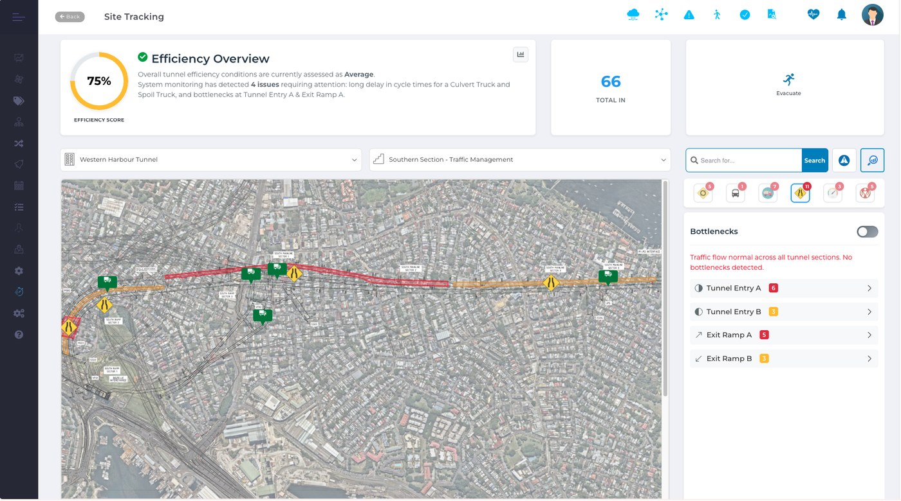

Air Quality Exposure Intelligence
Understand Air Quality.
Manage Exposure.
Maintain Safe Operations.
Atlas connects environmental monitoring — including DPM, NO2, CO and SO2 — with personnel, plant and ventilation to provide a live understanding of changing underground conditions. Know where conditions are changing, who may be affected, what's contributing and where intervention may be required.
What’s Happening Around The Reading?
See More Than The Air Quality Reading
Understand what is driving exposure and what you can do about it. A reading tells you how much is present. Atlas connects that reading with where people are, what plant is operating and how ventilation is performing to help engineers understand the conditions behind exposure.
Air Quality
- Concentration
- Trends
- Hotspots
- Thresholds
Personnel
- Location
- Time in Zone
- Zone Occupancy
- Exposure Duration
Plant & Vehicles
- Location
- Operating status
- Idle time
- Vehicle type / Emissions
Ventilation
- Airflow
- Fan status
- Air velocity
- Ventilation demand
Exposure Controls
- Air scrubbers
- Filtration
- RPE status
- Access / exclusion
Exposure Intelligence
Understand where exposure is occurring,
What is contributing to it and which controls can be applied.
Where Is The Problem — And Why?
Find The Hotspot. Then Understand Why.
Air Quality conditions can change significantly throughout an underground operation. Atlas overlays exposure monitoring with the live operating environment to show engineers what is happening around an elevated reading.
Exposure Hotspot Diagnosis
Where
Where are conditions changing?
Who
Who is within the affected area?
Plant
What equipment is operating nearby?
Ventilation
What are the current airflow conditions?
Trends
Are conditions improving or deteriorating?
Assess Concentration Zone
Continue Safe Operations

Medium Exposure Zone
Over Exposure Zone (34 mins)
- 2 vehicles
- 2 personnel
What Do We Do About It?
From Detection To TARP Action
Connect changing conditions with your site's defined response.
Atlas brings together the operational information needed to identify a trigger, understand the conditions surrounding it and support the appropriate site-defined response.
| TARP State | Atlas Identifies | Site-Defined Response |
|---|---|---|
| Normal | Conditions operating as expected | Continue and monitor |
| Elevated | Emerging trend or hotspot | Investigate conditions and controls |
| Action | Site-defined trigger reached | Apply defined controls |
| Escalation | Conditions continue to deteriorate | Escalate or restrict activity as required |
| Recovery | Conditions return within defined criteria | Verify and return according to procedure |
One connected process:
Atlas supports the TARP. Your site determines the triggers, responsibilities and required actions.
What’s Causing It?
Identify The Cause.
Apply The Right Control.
More ventilation isn't always the answer.
Elevated DPM may have several contributing factors.
Atlas helps engineers understand those factors before deciding how to respond.
| What Is Driving DPM? | Potential Control |
|---|---|
| High-emitting vehicle or plant | Remove, service, replace or reroute |
| Excessive idling | Reduce idle time / shut down |
| Traffic congestion | Reroute or redistribute traffic |
| Insufficient airflow | Increase or redirect ventilation |
| Fan performance issue | Investigate / restore ventilation performance |
| Localised activity | Manage activity or access |
| Persistent concentration | Consider additional filtration / air scrubbing |
The objective is to address the cause of exposure, not simply react to the measurement.
Understand Who May Be Affected
Connect conditions with personnel location and time in affected zones.
When elevated conditions are detected, Atlas identifies personnel within the affected area and provides the operational context needed to support the site's response.
Heading 4
| DPM Condition | TARP State | Personnel | Longest Occupancy | Ventilation |
|---|---|---|---|---|
| Elevated ↑ | Action | 7 | 34 min | Below Expected |
Personnel In Affected Zone
| Personnel | Time In Zone | Control Status | Current Location |
|---|---|---|---|
| Worker A | 12 min | Respiratory Protection (RPE) Recorded | Heading 4 |
| Worker B | 34 min | Review | Heading 4 |
| Worker C | 0 min | -- | Exited zone |
Close The Loop
From environmental monitoring
to coordinated operational response
A monitoring system tells you: “Exposure is elevated.” Atlas helps your engineering team:
Monitor
Detect changing conditions
Locate
Identify affected areas and personnel
Understand
Connect plant, activity and ventilation
Trigger
Identify the site-defined TARP state
Respond
Apply the appropriate control
Verify
Confirm conditions improve
Actively manage the conditions that create exposure.